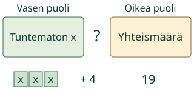
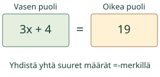
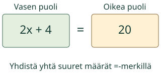
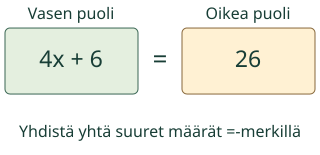
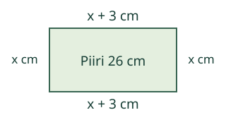

<link rel="stylesheet" href="lesson.css"><section class="eq14" data-b14-equation>
<section data-teaching-step="1" data-lesson-role="teaching-step">
<div class="intro"><p>Loikka suunnittelee ostosta. Kirjoita tilanteen kaksi yhtä suurta määrää yhtälöksi.</p></div>
</section>

<section data-teaching-step="2" data-lesson-role="teaching-step">
<section data-explore aria-label="Tilanteesta yhtälöksi"><button disabled type="button" data-action="step">Näytä seuraava vaihe</button><div data-model></div><p data-caption>3 putkea ja 4 € teline maksavat 19 €. x on yhden putken hinta euroina. Nimeä tuntemattoman määrä ja yksikkö.</p><details data-tools data-lesson-role="teaching-step"><summary>Vaihda mallia tai toista</summary><label>Malli<select disabled data-model-case><option value="shop">3 putkea ja teline</option><option value="age">Kaksi ikää</option><option value="rectangle">Suorakulmion piiri</option></select></label><button disabled type="button" data-action="play">Toista vaiheet</button> <button disabled type="button" data-action="stop">Pysäytä</button> <button disabled type="button" data-action="model-reset">Mallin alkuun</button><p>Voit tutkia vaiheet vapaasti tai vastata suoraan. Toisto ei käynnisty itsestään.</p></details></section>
</section>
<nav data-lesson-role="metadata"><a href="#eq14-explain">Näin ajattelet</a><a href="#eq14-practice">Kokeile itse</a><a href="#eq14-teacher">Paperille</a></nav>
<section id="eq14-explain" data-lesson-role="worked-example"><section data-teaching-step="3-1" data-lesson-role="worked-example"><h2>Näin ajattelet</h2><h3>Yksi lisäosa, monta samanlaista</h3><p>Olkoon x yhden putken hinta euroina. Kolmen putken hinta on 3x. Teline ostetaan vain kerran, joten lisätään 4, ei kolme kertaa 4. Molemmat hinnat yhdessä ovat 19: 3x + 4 = 19. Myös 19 = 4 + x + x + x kertoo saman. Älä ratkaise x:ää ennen kuin olet kuvannut yhteyden.</p><figure data-lesson-role="worked-example"><figcaption>Ratkaistu esimerkki, ei alkutila.</figcaption></figure></section>
<section data-teaching-step="3-2" data-lesson-role="worked-example"><h3>Molemmat iät mukaan</h3><p>Aavan ikä on x ja Loikan x + 4. Yhteisiän yhtälö on x + (x + 4) = 20. Muoto 2x + 4 = 20 on sama yhtälö sievennettynä. Pelkkä x + 4 = 20 jättää Aavan iän pois. Kirjain tarkoittaa lukua, ei henkilön nimeä.</p><figure data-lesson-role="worked-example"><figcaption>Ratkaistu esimerkki, ei alkutila.</figcaption></figure></section>
<section data-teaching-step="3-3" data-lesson-role="worked-example"><h3>Piiri on neljän sivun summa</h3><p>Leveys on x cm ja pituus x + 3 cm. Kaksi kumpaakin antaa 2x + 2(x + 3) = 26. Myös 4x + 6 = 26 ja 26 = x + (x + 3) + x + (x + 3) käyvät. Kyseessä on piiri senttimetreinä, ei pinta-ala neliösenttimetreinä.</p><figure data-lesson-role="worked-example"><figcaption>Ratkaistu esimerkki, ei alkutila.</figcaption></figure><figure data-lesson-role="worked-example"><figcaption>Piiri lasketaan neljästä sivusta. Kaavio ei ole mittakaavassa.</figcaption></figure></section>
<section data-teaching-step="3-4" data-lesson-role="worked-example"><h3>Vältä tämä ansa</h3><p>Lauseke 3x + 4 kuvaa hintaa, mutta se ei vielä ole yhtälö. Yhtälö tarvitsee kaksi puolta ja yhtäsuuruusmerkin. Muoto 3(x + 4) = 19 ostaisi telineen kolme kertaa.</p><p>Ennusta ennen seuraavaa vaihetta: mitä osille tapahtuu ja mikä pysyy samana?</p></section></section>

<section data-teaching-step="4" data-lesson-role="teaching-step">
<section id="eq14-practice"><h2>Kokeile itse</h2><p>Vastaa itse. Malli, selitykset ja vihje ovat valinnaisia.</p><label>Tehtävä<select disabled data-task><option value="shop">1. Kolme samanhintaista putkea ja yksi 4 € teline maksavat</option><option value="age">2. Aava on x vuotta. Loikka on 4 vuotta vanhempi. Yhteensä</option><option value="balance">3. Vasemmalla on kaksi samanlaista pussia ja 3 painoyksikk</option><option value="transfer">4. Suorakulmion leveys on x cm ja pituus 3 cm enemmän. Pii</option></select></label><p data-question>Kolme samanhintaista putkea ja yksi 4 € teline maksavat 19 €. x on yhden putken hinta euroina. Muodosta yhtälö.</p><div data-answer-group="form"><label>Oma yhtälö<input disabled data-answer type="text" inputmode="text" maxlength="128" placeholder="esim. 2x + 3 = 15" autocomplete="off"></label><p>Käytä kirjainta x ja yhtä =-merkkiä. Kertomerkiksi käy ·, × tai *. Sulut ja samanarvoiset muodot käyvät. Myös x = luku hyväksytään saman lukuehdon tarkistuksena; se ei yksin näytä muodostamistapaa.</p></div><button disabled type="button" data-action="check">Tarkista</button><p data-feedback data-result="neutral" aria-live="polite">Tarkista, kun olet valmis.</p><details data-lesson-role="hint"><summary>Tarvitsen vihjeen</summary><p>Nimeä ensin x:n merkitys. Kirjoita monta samanlaista kertolaskuna. Lisää vain kerran tuleva osa. Mitä yhtä suurta määrä on tilanteessa?</p></details></section>
</section>

<section data-teaching-step="5" data-lesson-role="teaching-step">
<details data-lesson-role="teaching-step"><summary>Lisää tutkittavaa</summary><p>Keksi kaksi eri ostostilannetta, joista tulee 2x + 3 = 15. Yhtälö ei yksin kerro, olivatko tuntemattomat lippuja vai kyniä.</p></details>
</section>
<details id="eq14-teacher" data-lesson-role="teacher-note"><summary>Opettajalle, paperille ja lopuksi</summary><p>Kirjoita oma ostostilanne paperille. Pari muodostaa siitä yhtälön, kertoo x:n yksikön ja osoittaa, mitä kumpikin puoli tarkoittaa. Älä käytä oikeita eläinten ikiä; Aava ja Loikka ovat tässä tarinan hahmoja.</p><p data-lesson-role="question"><strong>Lopuksi:</strong> Kaksi samanlaista lippua ja 3 € toimitus maksavat 15 €. x on yhden lipun hinta. Muodosta yhtälö ja selitä, miksi 2(x + 3) = 15 kuvaa eri ostosta.</p><p>Luokat 7-9. Tavoite: ensimmäisen asteen yhtälön muodostaminen tilanteesta. Kanoniset välttämättömät ja vahvasti tukevat taidot näkyvät navigaatiossa; malli tai paikallinen harjoitus ei lisää kovia esitietovaatimuksia.</p><p>Kaavio näyttää nimettyjä lukuja ja lausekkeita, ei fyysisen vaa’an mittausta. Negatiiviset ja murto-osaiset ratkaisut ovat lukuja. Tarinassa x:n yksikkö ja sallittu ei-negatiivinen tai positiivinen arvo nimetään.</p><p>Syöttö tukee etumerkillisiä kokonais- ja desimaalilukuja sekä murtolukuja, enintään 128 merkkiä. Desimaalissa normalisoinnin jälkeen enintään 18 kokonais- ja 9 desimaalinumeroa. Etu-/loppunollat ja samansuuruiset murtoluvut eivät muuta arvoa. Ei eksponenttimuotoa tai pyöristystä. Yhtälöissä yksi x, ensimmäisen asteen lausekkeet, sulut enintään 12 sisäkkäin ja jako nollasta poikkeavalla vakiolla. Muuttujalla jakoa tai x²-termejä ei tueta. Paperille voi kirjoittaa muitakin perusteltuja tapoja.</p><p>Toiston 650 ms on esitysväli, ei matemaattinen suure tai aikaraja. Kaikki vaiheet voi pysäyttää ja palauttaa. Harjoitus tarkistaa nykyisen vastauksen, ei itsenäisyyttä, muistissa säilymistä tai muodollista hallintaa. Ei henkilökohtaista historiaa, ääni-/puhepakkoa, pakollista mallireittiä tai esineiden nimeämistä.</p></details><noscript data-lesson-role="metadata"><p>Ilman JavaScriptiä alkumalli ja ratkaistut esimerkit näkyvät. Vastaa paperille. Vuorovaikutus ja paikallinen tarkistus tarvitsevat JavaScriptin.</p></noscript></section>
